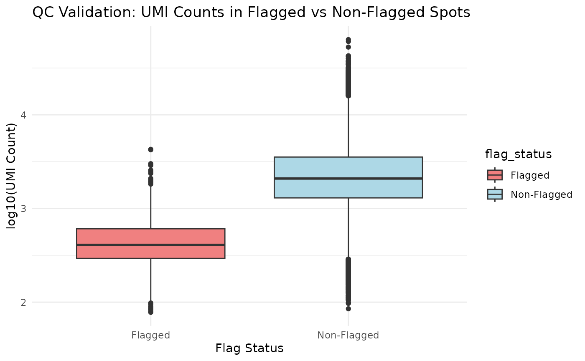

Edge Dryspot Detection in Human Hippocampus Data
Source:vignettes/hippocampus-edge-detection.Rmd
hippocampus-edge-detection.Rmd
pkgload::load_all("..", export_all = TRUE)
#> ℹ Loading SpatialDryArtifacts
knitr::opts_chunk$set(cache = FALSE)
source("../R/edge_helper_functions.R")
library(SpatialDryArtifacts)
library(ExperimentHub)
#> Loading required package: BiocGenerics
#> Loading required package: generics
#>
#> Attaching package: 'generics'
#>
#> The following objects are masked from 'package:base':
#>
#> as.difftime, as.factor, as.ordered, intersect, is.element, setdiff,
#> setequal, union
#>
#>
#> Attaching package: 'BiocGenerics'
#>
#> The following objects are masked from 'package:stats':
#>
#> IQR, mad, sd, var, xtabs
#>
#> The following objects are masked from 'package:base':
#>
#> anyDuplicated, aperm, append, as.data.frame, basename, cbind,
#> colnames, dirname, do.call, duplicated, eval, evalq, Filter, Find,
#> get, grep, grepl, is.unsorted, lapply, Map, mapply, match, mget,
#> order, paste, pmax, pmax.int, pmin, pmin.int, Position, rank,
#> rbind, Reduce, rownames, sapply, saveRDS, table, tapply, unique,
#> unsplit, which.max, which.min
#>
#> Loading required package: AnnotationHub
#> Loading required package: BiocFileCache
#> Loading required package: dbplyr
library(ggplot2)
library(gridExtra)
#>
#> Attaching package: 'gridExtra'
#>
#> The following object is masked from 'package:BiocGenerics':
#>
#> combineIntroduction This vignette demonstrates how to use SpatialDryArtifacts to detect and classify edge dryspots in spatial transcriptomics data using human hippocampus samples.
Loading Data We’ll use the human hippocampus dataset from ExperimentHub:
library(SpatialDryArtifacts) library(ExperimentHub) library(ggplot2) library(gridExtra)
# Load hippocampus data
eh <- ExperimentHub()
myfiles <- query(eh, "humanHippocampus2024")
spatial_hpc_spe <- myfiles[["EH9605"]]
#> see ?humanHippocampus2024 and browseVignettes('humanHippocampus2024') for documentation
#> loading from cache
#> require("SpatialExperiment")
cat("Total samples:", length(unique(spatial_hpc_spe$sample_id)), "\n")
#> Total samples: 36
cat("Total spots:", ncol(spatial_hpc_spe), "\n")
#> Total spots: 150917Edge Dryspot Detection We’ll demonstrate detection using balanced parameters that provide good sensitivity while avoiding over-detection:
source("../R/edge_helper_functions.R")
# Apply edge dryspot detection to all samples
spe_detected <- detectEdgeDryspots(
spatial_hpc_spe,
qc_metric = "sum_gene",
samples = "sample_id",
mad_threshold = 1.8,
edge_threshold = 0.2,
min_cluster_size = 3,
name = "edge_dryspot"
)
#> Detecting edges...
#> Loading required namespace: igraph
#> Number of samples with edges detected: 8
#> Samples with edges detected: V10B01-086_C1, V10B01-085_B1, V10B01-085_C1, V11U08-084_D1, V11A20-297_B1, V11L05-336_C1, V12F14-051_C1, V12F14-051_B1
#> Finding problem areas...
#> Edge dryspot detection completed!
# Apply enhanced classification
spe_classified <- classifyEdgeDryspots(spe_detected)
#> Classifying edge dryspots with enhanced categories...
#> Number of problem areas marked for removal: 0
#> Enhanced edge dryspot classification completed!
#> Classifications added:
#> - Backward compatible: edge_dryspot_binary, edge_dryspot_classification
#> - Enhanced: edge_dryspot_enhanced, edge_dryspot_edge_zone, edge_dryspot_sample_type
#> - Edge zones and sample types will be implemented in subsequent phasesVisualization: QC Metrics and Detection Results We’ll create a comprehensive visualization showing QC metrics and detection results for all samples:
# Get all unique samples
all_samples <- unique(spe_classified$sample_id)
# Create plotting function for each sample
create_sample_plots <- function(sample_id, spe_data) {
# Extract single sample
spe_sample <- spe_data[, spe_data$sample_id == sample_id]
coords <- spatialCoords(spe_sample)
in_tissue <- spe_sample$in_tissue
plot_data <- data.frame(
x = coords[in_tissue, 1],
y = coords[in_tissue, 2],
sum_umi = spe_sample$sum_umi[in_tissue],
sum_gene = spe_sample$sum_gene[in_tissue],
expr_chrM_ratio = ifelse(is.na(spe_sample$expr_chrM_ratio[in_tissue]), 0,
spe_sample$expr_chrM_ratio[in_tissue]),
edge_flagged = spe_sample$edge_dryspot_edge[in_tissue]
)
# Base theme
base_theme <- theme_void() +
theme(plot.title = element_text(size = 8, hjust = 0.5),
legend.position = "none")
# Create 4 plots per sample
p1 <- ggplot(plot_data, aes(x = x, y = y, color = log10(sum_umi + 1))) +
geom_point(size = 0.3, alpha = 0.7) +
scale_color_viridis_c(name = "log10(UMI)") +
ggtitle(paste(sample_id, "- UMI")) +
base_theme + coord_fixed()
p2 <- ggplot(plot_data, aes(x = x, y = y, color = log10(sum_gene + 1))) +
geom_point(size = 0.3, alpha = 0.7) +
scale_color_viridis_c(name = "log10(Gene)", option = "plasma") +
ggtitle(paste(sample_id, "- Genes")) +
base_theme + coord_fixed()
p3 <- ggplot(plot_data, aes(x = x, y = y, color = expr_chrM_ratio)) +
geom_point(size = 0.3, alpha = 0.7) +
scale_color_viridis_c(name = "Mito Ratio", option = "inferno") +
ggtitle(paste(sample_id, "- Mito")) +
base_theme + coord_fixed()
p4 <- ggplot(plot_data, aes(x = x, y = y, color = edge_flagged)) +
geom_point(size = 0.3, alpha = 0.7) +
scale_color_manual(values = c("FALSE" = "lightgray", "TRUE" = "red"),
name = "Edge") +
ggtitle(paste(sample_id, "- Flagged")) +
base_theme + coord_fixed()
return(list(p1, p2, p3, p4))
}
# Generate and display plots for each sample (one sample per page/block)
cat("Generating plots for", length(all_samples), "samples...\n")
#> Generating plots for 36 samples...
for (sample_id in all_samples) {
sample_plots <- create_sample_plots(sample_id, spe_classified)
gridExtra::grid.arrange(
grobs = sample_plots,
ncol = 2,
nrow = 2,
top = paste("Sample:", sample_id)
)
}


Classification Summary Let’s examine the enhanced classification system:
# Create classification summary table
classification_summary <- table(spe_classified$edge_dryspot_enhanced)
print("Enhanced Classification Summary:")
#> [1] "Enhanced Classification Summary:"
print(classification_summary)
#>
#> edge_dryspot none small_cluster
#> 62 149744 1111
# Calculate percentages
classification_pct <- round(100 * classification_summary / sum(classification_summary), 2)
print("Classification Percentages:")
#> [1] "Classification Percentages:"
print(classification_pct)
#>
#> edge_dryspot none small_cluster
#> 0.04 99.22 0.74
# Create summary data frame
summary_df <- data.frame(
Classification = names(classification_summary),
Count = as.numeric(classification_summary),
Percentage = as.numeric(classification_pct)
)
print(summary_df)
#> Classification Count Percentage
#> 1 edge_dryspot 62 0.04
#> 2 none 149744 99.22
#> 3 small_cluster 1111 0.74
# Sample-wise summary
sample_summary <- aggregate(
spe_classified$edge_dryspot_edge,
by = list(Sample = spe_classified$sample_id),
FUN = function(x) sum(x, na.rm = TRUE)
)
names(sample_summary)[2] <- "Edge_Spots_Detected"
sample_summary$Total_Spots <- aggregate(
spe_classified$in_tissue,
by = list(spe_classified$sample_id),
FUN = sum
)$x
sample_summary$Detection_Percentage <- round(
100 * sample_summary$Edge_Spots_Detected / sample_summary$Total_Spots, 2
)
print("Sample-wise Detection Summary:")
#> [1] "Sample-wise Detection Summary:"
print(sample_summary)
#> Sample Edge_Spots_Detected Total_Spots Detection_Percentage
#> 1 V10B01-085_A1 0 3654 0.00
#> 2 V10B01-085_B1 28 3263 0.86
#> 3 V10B01-085_C1 26 3738 0.70
#> 4 V10B01-085_D1 0 3348 0.00
#> 5 V10B01-086_A1 0 4655 0.00
#> 6 V10B01-086_B1 0 3964 0.00
#> 7 V10B01-086_C1 2 2606 0.08
#> 8 V10B01-086_D1 0 3389 0.00
#> 9 V11A20-297_A1 0 4432 0.00
#> 10 V11A20-297_B1 2 4659 0.04
#> 11 V11A20-297_C1 0 3429 0.00
#> 12 V11A20-297_D1 0 3412 0.00
#> 13 V11L05-333_A1 0 4969 0.00
#> 14 V11L05-333_B1 0 4985 0.00
#> 15 V11L05-333_C1 0 4548 0.00
#> 16 V11L05-333_D1 0 4938 0.00
#> 17 V11L05-335_A1 0 4607 0.00
#> 18 V11L05-335_B1 0 4737 0.00
#> 19 V11L05-335_C1 0 4887 0.00
#> 20 V11L05-335_D1 0 4483 0.00
#> 21 V11L05-336_A1 0 4539 0.00
#> 22 V11L05-336_B1 0 4193 0.00
#> 23 V11L05-336_C1 1 4443 0.02
#> 24 V11L05-336_D1 0 4658 0.00
#> 25 V11U08-081_A1 0 4609 0.00
#> 26 V11U08-081_B1 0 3763 0.00
#> 27 V11U08-081_C1 0 3649 0.00
#> 28 V11U08-081_D1 0 4443 0.00
#> 29 V11U08-084_A1 0 4822 0.00
#> 30 V11U08-084_B1 0 4541 0.00
#> 31 V11U08-084_C1 0 4986 0.00
#> 32 V11U08-084_D1 1 4291 0.02
#> 33 V12F14-051_A1 0 3728 0.00
#> 34 V12F14-051_B1 1 3074 0.03
#> 35 V12F14-051_C1 1 4037 0.02
#> 36 V12F14-051_D1 0 4438 0.00Quality Control Validation Finally, let’s validate that flagged spots have lower quality metrics:
# Create QC comparison data
in_tissue_data <- spe_classified[, spe_classified$in_tissue]
qc_data <- data.frame(
sum_umi = in_tissue_data$sum_umi,
sum_gene = in_tissue_data$sum_gene,
expr_chrM_ratio = ifelse(is.na(in_tissue_data$expr_chrM_ratio), 0,
in_tissue_data$expr_chrM_ratio),
flagged = in_tissue_data$edge_dryspot_edge
)
# Calculate median differences
flagged_umi <- median(qc_data$sum_umi[qc_data$flagged])
nonflagged_umi <- median(qc_data$sum_umi[!qc_data$flagged])
flagged_gene <- median(qc_data$sum_gene[qc_data$flagged])
nonflagged_gene <- median(qc_data$sum_gene[!qc_data$flagged])
cat("QC Validation Results:\n")
#> QC Validation Results:
cat("Flagged spots - Median UMI:", flagged_umi, "\n")
#> Flagged spots - Median UMI: 3709
cat("Non-flagged spots - Median UMI:", nonflagged_umi, "\n")
#> Non-flagged spots - Median UMI: 2068
cat("UMI difference:", nonflagged_umi - flagged_umi, "\n\n")
#> UMI difference: -1641
cat("Flagged spots - Median Genes:", flagged_gene, "\n")
#> Flagged spots - Median Genes: 1934
cat("Non-flagged spots - Median Genes:", nonflagged_gene, "\n")
#> Non-flagged spots - Median Genes: 1169
cat("Gene difference:", nonflagged_gene - flagged_gene, "\n")
#> Gene difference: -765
# Create validation boxplot
qc_data$flag_status <- ifelse(qc_data$flagged, "Flagged", "Non-Flagged")
validation_plot <- ggplot(qc_data, aes(x = flag_status, y = log10(sum_umi + 1))) +
geom_boxplot(fill = c("lightcoral", "lightblue")) +
labs(title = "QC Validation: UMI Counts in Flagged vs Non-Flagged Spots",
x = "Flag Status", y = "log10(UMI Count)") +
theme_minimal()
print(validation_plot)
Conclusion This vignette demonstrates:
Edge dryspot detection using balanced parameters on human hippocampus data Comprehensive visualization showing QC metrics and detection results across all samples Enhanced classification system with mechanistically-informed categories Quality control validation confirming that flagged spots have lower quality metrics
The detection successfully identifies problematic spots while preserving high-quality tissue for downstream analysis.